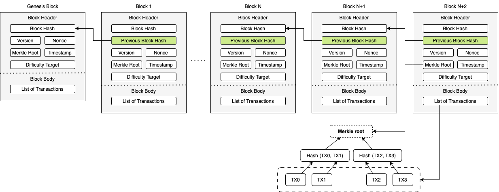

2. Fundamentals and Principles of Blockchains#
Block Structure#
Block Header:
Block Hash: hash of the block
Previous Block Hash: hash of the previous block
Version: version of the block
Merkle Root: hash of the merkle tree/tree of transactions
Timestamp: time of block creation
Nonce: random number used in mining
Difficulty Target: mining difficulty in PoW-based consensus
Block Body:
Transactions: list of transactions within the block
Structure of a Blockchain#
Transactions#
Basic elements of a transaction:
Sender’s Address (public key)
Receiver’s Address (public key)
Amount
Signature (transaction is signed by sender’s private key)
Transaction lifecycle:
Transaction is created
Transaction is broadcasted to the network
Transaction is validated by nodes
Transaction is included in a block
Block is mined and added to the blockchain
Example Transaction#
{
"txid": "1eabcde1234567890abcdef1234567890abcdef1234567890abcdef1234567890",
"version": 1,
"locktime": 0,
"vin": [
{
"txid": "abcdef1234567890abcdef1234567890abcdef1234567890abcdef1234567890",
"vout": 0,
"scriptSig": {
"asm": "3045022100e3b0c44298fc1c149afbf4c8996fb92427ae41e4649b934ca495991b7852b855022100fb4b0a063b5f7f8a5c47b7e9e527e55e3e55ffb015e9078578b7d7c8f1fa3d4e",
"hex": "483045022100e3b0c44298fc1c149afbf4c8996fb92427ae41e4649b934ca495991b7852b855022100fb4b0a063b5f7f8a5c47b7e9e527e55e3e55ffb015e9078578b7d7c8f1fa3d4e"
},
"sequence": 4294967295
}
],
"vout": [
{
"value": 0.50000000,
"n": 0,
"scriptPubKey": {
"asm": "OP_DUP OP_HASH160 89abcdefabbaabbaabbaabbaabbaabbaabbaabbaabba OP_EQUALVERIFY OP_CHECKSIG",
"hex": "76a91489abcdefabbaabbaabbaabbaabbaabbaabbaabba88ac",
"reqSigs": 1,
"type": "pubkeyhash",
"addresses": [
"1Ez69SnzzmePmZX3WpEzMKTrcBF2gpNQ55"
]
}
},
{
"value": 0.49900000,
"n": 1,
"scriptPubKey": {
"asm": "OP_DUP OP_HASH160 89abcdefabbaabbaabbaabbaabbaabbaabbaabbaabba OP_EQUALVERIFY OP_CHECKSIG",
"hex": "76a91489abcdefabbaabbaabbaabbaabbaabbaabbaabba88ac",
"reqSigs": 1,
"type": "pubkeyhash",
"addresses": [
"1A1zP1eP5QGefi2DMPTfTL5SLmv7DivfNa"
]
}
}
]
}
Alice wants to send 0.5 BTC to Bob.
Inputs: Alice’s address, Bob’s address, amount (0.5 BTC), fee (0.001 BTC).
Outputs: Transaction outputs include the amount being sent to Bob and any change back to Alice.
Signature: Alice signs the transaction with her private key.
Transaction Broadcast:
Alice’s transaction is broadcast to the Bitcoin network.
Miners Validate:
Miners validate the transaction, checking Alice’s balance and the signature.
Inclusion in a Block:
Once validated, the transaction is included in the next mined block.
Confirmation:
Bob sees the transaction after it’s included in a block and has been confirmed by the network.
The role of nodes#
Types of nodes:
Full Nodes: store the entire blockchain, validate and relay transactions and blocks
Light Nodes: store only block headers, rely on full nodes for transaction validation
Mining Nodes: specialized full nodes that participate in the consensus mechanism
Node Functions:
Maintaining Blockchain Copy: Every full node keeps a copy of the entire blockchain
Validating Transactions: Ensure all transactions comply with network rules before adding them to a block
Double-spending: Ensure that the same funds are not spent twice
Transaction format: Check that the transaction is properly formatted
Transaction signature: Verify that the transaction is signed by the correct private key
Transaction validity: Ensure that the sender has enough funds to complete the transaction
Transaction history: Check that the transaction does not conflict with previous transactions
Relaying Information: Propagate transactions and blocks throughout the network to ensure synchronization
Consensus Mechanisms#
Hard to achieve agreement in a decentralized network
Ensure that all nodes agree on the state of the blockchain
Prevent double-spending and other malicious activities
Types of Consensus Mechanisms:
Proof of Work (PoW): Miners solve complex mathematical puzzles to validate transactions and create new blocks
Proof of Stake (PoS): Validators are chosen based on the number of coins they hold
Delegate Proof of Stake (DPoS): Validators are elected by coin holders to create new blocks
Practical Byzantine Fault Tolerance (PBFT): Nodes reach consensus through a series of voting rounds
Proof of Work (PoW)#
random selection prone to attacks -> nodes should prove they did work required to propose a new block
concept adapted from digital tokens by Hal Finney in 2004 through the idea of “reusable proof of work” using SHA-1
each node of the network is calculating a hash value of the block header
the first node to find a hash value below a certain threshold is allowed to propose a new block
when reaching the target value, it broadcasts the block to other nodes
all other nodes must mutually confirm the correctness of the hash value
if the hash value is correct, the block is added to the blockchain
Proof of Work (PoW) II#
in decentralized network multiple blocks might be generated simultaneously -> blockchain branches
longest chain rule: the chain with the most accumulated proof of work is considered the correct one
PoW is energy-intensive and slow -> scalability issues
PoW (or mining) is used in Bitcoin, Ethereum (until 2022), and other cryptocurrencies
PoW in Bitcoin based on SHA-256 hash function
Bitcoin adjusts the mining difficulty every 2016 blocks to maintain a 10-minute block time
References#
[Iqbal and Matulevičius, 2021] [Nakamoto, 2009] [Zheng et al., 2017] [RPOW - Reusable Proofs of Work, n.d.] [Crypto.com, n.d.] [Saad et al., 2020]